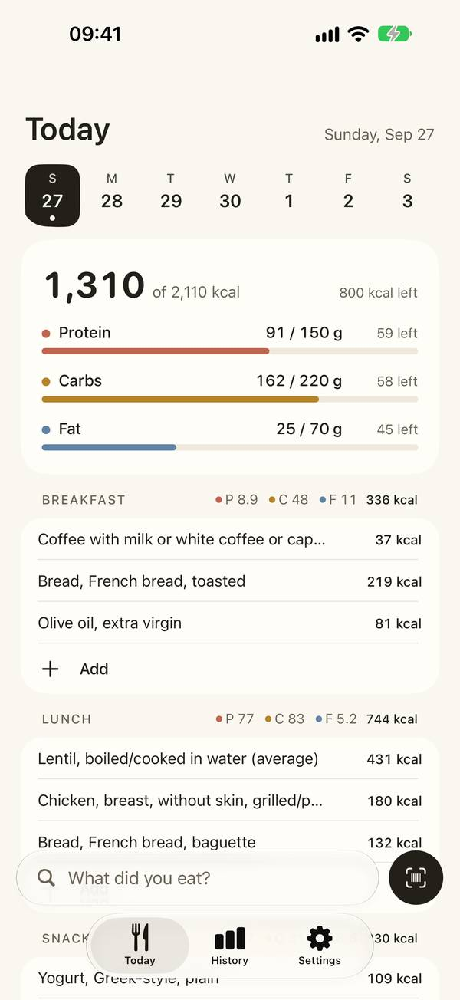
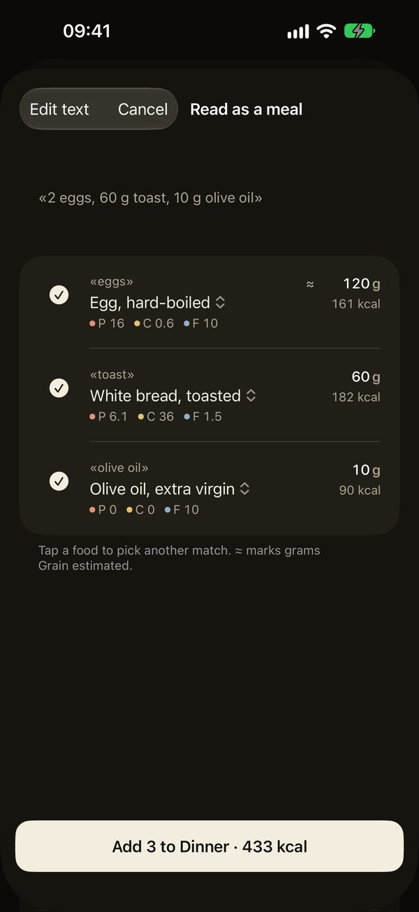
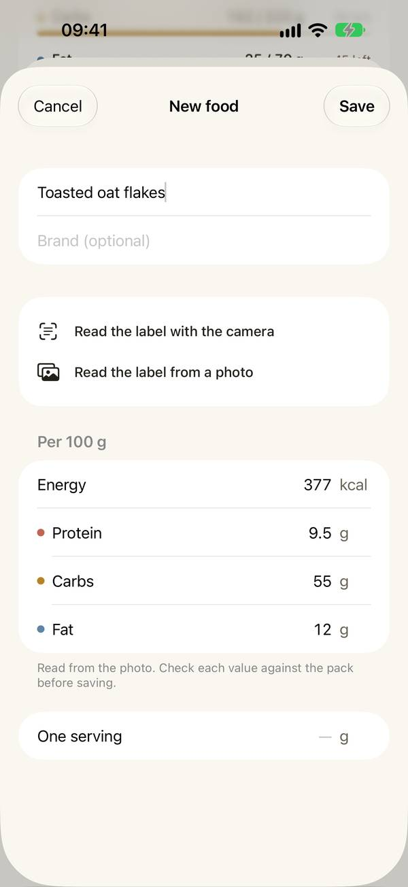
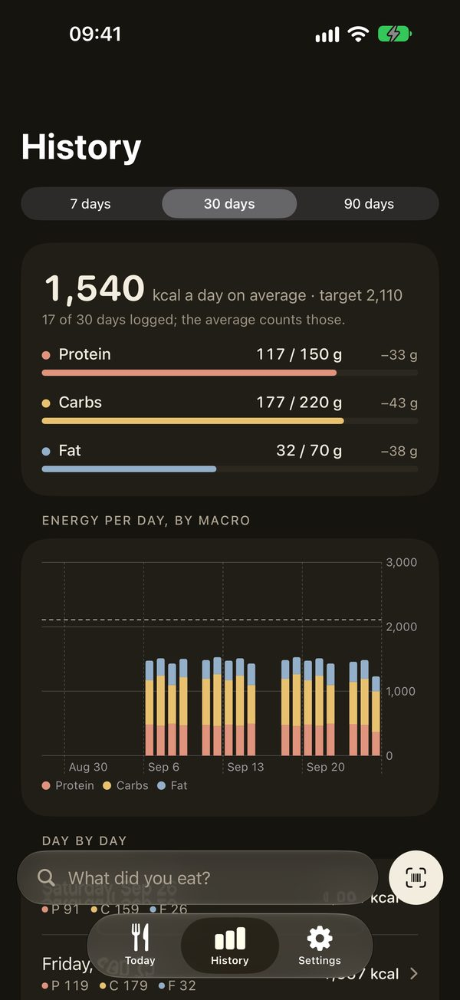

Seize Apps · iOS
Grain
Ganar músculo, perder grasa o seguir lo que te ha pautado tu nutricionista: Grain sirve igual para todo. Las metas las pones tú; Grain anota lo que comes y lo compara, sin proponer ni juzgar. Pasarte no se pinta de rojo ni cumplir de verde: la barra se llena en su color y la cifra dice «+12 g». Más de 4.000 alimentos de las tablas CIQUAL y BEDCA van dentro de la app y funcionan sin conexión.




Qué hace
Una sola cosa, bien hecha.
Como lo dirías
Escribe «2 huevos, 60 g de pan tostado, 10 g de aceite» y Grain separa los alimentos y propone los gramos, con los valores de las tablas; tú lo revisas antes de anotar. O busca, escanea un código de barras (Open Food Facts), crea una receta y apúntala por su peso ya cocinado, o mete los macros a mano. Las raciones habituales ya vienen puestas, y cualquier alimento que no cuadre con su envase se puede corregir.
La etiqueta, en tu iPhone
Con Grain Pro, apunta la cámara a la tabla nutricional, o elige una foto, y los valores por 100 g se rellenan solos. Se lee en el dispositivo; nada sale del teléfono.
Cómo suman tus semanas
Cada comida suma junto a su nombre y el día enseña lo que queda de energía y de cada macro. Grain Pro añade el historial de siete, treinta o noventa días, con la media de los días anotados (y diciéndolo), además de widgets y Apple Salud: una compra única, con 30 días de prueba gratis. Sin rachas, sin peso.
Privacidad
Tuyo, no nuestro.
Grain guarda tu diario en tu dispositivo y en tu propia cuenta de iCloud. Del código de barras solo sale el número, a Open Food Facts, salvo que elijas enviarle un producto. Apple Salud solo se escribe si lo activas, y nunca se lee. Sin cuenta, sin analítica.
Una app de Seize Apps.